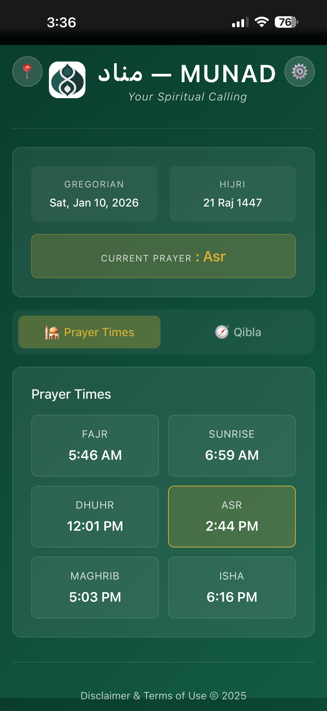

بِسْمِ اللَّـهِ الرَّحْمَـٰنِ الرَّحِيمِ
Munad مُناد
Your Call to Prayer
A beautiful companion for precise prayer times, Qibla direction, and adhan notifications. Built with care as a sadaqa for the Muslim community.
No tracking • No ads • 100% Privacy • Always Free
